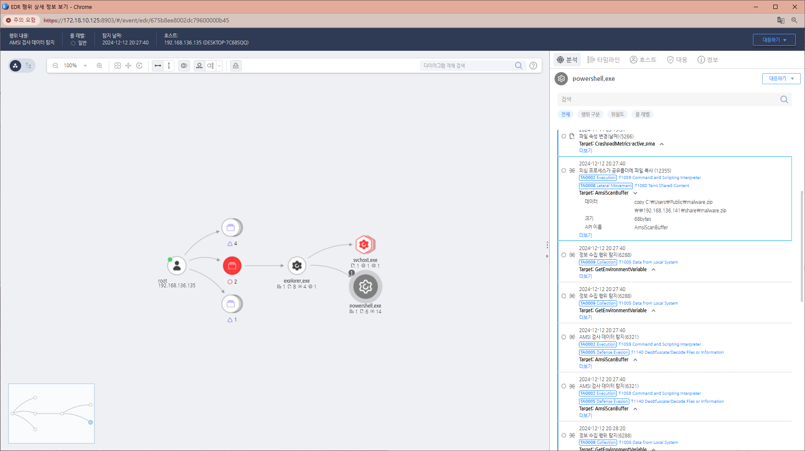

T1080.000.01 공유 디렉터리 오염
D3FEND
MITRE ATT&CK 액션을 기준으로 대응 방안을 작성
Detection
- process_name:powershell.exe OR cmd.exe OR wscript.exe OR mshta.exe AND
- Action : FileCreate AND
- target_path : (begin with)"\"
Detection(EDR)

Response
XXXX
Mitigations
- 권한 관리 (Access Control Management)
- 최소 권한 원칙:
- 공유 디렉터리에 대한 접근 권한을 최소화하고, 읽기/쓰기/실행 권한을 엄격히 관리합니다.
- 불필요한 공유 디렉터리 사용을 제한하고, 모든 사용자 계정에 대해 권한을 정기적으로 검토합니다.
- 읽기 전용 공유:
- 실행 파일이 포함된 디렉터리는 읽기 전용으로 설정하여 공격자가 파일을 수정하거나 덮어쓰지 못하도록 합니다.
- 파일 무결성 검사 (File Integrity Monitoring)
- FIM(Files Integrity Monitoring) 도구 사용:
- 공유 디렉터리에서 파일의 변경 사항을 지속적으로 모니터링하고, 예상치 못한 변경 사항이 발생하면 경고를 생성하도록 구성합니다.
- 디지털 서명 확인:
- 실행 파일과 스크립트의 디지털 서명을 확인하고, 서명이 유효하지 않거나 변경된 경우 실행을 차단합니다.
- 공유 디렉터리 사용 제한 (Restrict Shared Directory Usage)
- 업무용 공유 디렉터리 분리:
- 업무 관련 파일만 공유 디렉터리에 저장하도록 규정하고, 개인 파일이나 실행 파일 업로드를 금지합니다.
- 외부 사용자 접근 차단:
- 내부 네트워크 외부에서 공유 디렉터리에 접근하는 것을 방지합니다.
- 모니터링 및 탐지 (Monitoring and Detection)
- 사용자 활동 로깅:
- 공유 디렉터리에서 파일을 생성, 수정, 삭제한 사용자를 기록하고, 의심스러운 활동을 감지합니다.
- 악성 파일 탐지:
- 공유 디렉터리에 저장된 파일을 정기적으로 스캔하여 악성코드 또는 의심스러운 스크립트를 탐지합니다.
- 이벤트 모니터링:
Windows 이벤트 로그(Event ID 5140 - 파일 공유 액세스)에 대한 모니터링을 설정합니다.
- 실행 파일 차단 (Executable Prevention)
- AppLocker 또는 WDAC 사용:
- 공유 디렉터리에서 실행 가능한 파일(.exe, .dll, .bat, .ps1 등)의 실행을 차단하거나 허용 목록 기반 정책을 설정합니다.
- 확장자 제한:
- 공유 디렉터리에서 허용되지 않은 파일 형식의 업로드를 방지합니다.
- 네트워크 보호 (Network Segmentation & Traffic Control)
- 네트워크 분리:
- 중요한 디렉터리는 별도의 네트워크 세그먼트에 배치하여 공격 표면을 줄입니다.
- 의심스러운 트래픽 차단:
- IDS/IPS를 사용하여 공유 디렉터리에 대해 발생하는 의심스러운 트래픽을 감지하고 차단합니다.
- 교육 및 인식 (User Training & Awareness)
- 보안 인식 교육:
- 사용자들에게 공유 디렉터리 오염의 위험성과 이를 예방하는 방법을 교육합니다.
- 의심 파일 보고 절차:
- 사용자들이 의심스러운 파일을 발견하면 즉시 보안 팀에 보고하도록 절차를 마련합니다.
- 백업 및 복구 (Backup and Recovery)
- 정기적인 백업:
- 공유 디렉터리의 파일을 주기적으로 백업하여 파일이 오염되었을 경우 신속히 복구할 수 있도록 합니다.
- 버전 관리:
- 파일의 이전 버전을 유지하여 오염된 파일을 손쉽게 복원할 수 있도록 설정합니다.
Affected Techniques
Action 실행시 함께 영향을 받는 다른 Techniqes
| D3FEND |
| D3-FCA File Creation Analysis |
| D3-FIM File Integrity Monitoring |
| D3-PLA Process Lineage Analysis |